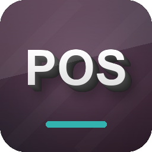

POS Analytic Distribution
Seamless Odoo 19+ Integration
Overview
Automatically assign analytic accounts to your POS sessions and orders. Ensure every transaction is correctly tagged in your financial reports using Odoo's modern JSON analytic distribution.
Configure
Set default analytic accounts per POS config.
Automate
Orders inherit tags automatically.
Analyze
Full visibility in Profit & Loss reports.
How It Works
Follow these simple steps
Configure POS Settings

Action: Navigate to Point of Sale > Configuration > Settings.
Select the Analytic Account you wish to bind to this Point of Sale. All future
sessions will use this account.
Process Orders

Action: Process sales as usual.
The module automatically stamps the Analytic Account onto the backend POS Order
record. No manual input is required from the cashier.
Verify Accounting

Result: Check your Journal Items.
The Analytic Distribution (JSON) field is correctly populated with the 100%
distribution for your selected account.
Developed by Mohamed Saied | Support: support@odoo-addons.com